PRÁCTICA 3.2: DESPLIEGUE DE APLICACION CON NODE EXPRESS
En primer lugar, y tras haber usado tomcat9 en la práctica anterior deberemos desactivarlo de nuestro equipo, ya que este puede causar incompatibilidad con Node.
Instalación de Node.js, Express y test de la primera aplicación
En primer lugar y sin extendernos mucho procederemos a instalar Node.js de la siguiente manera:
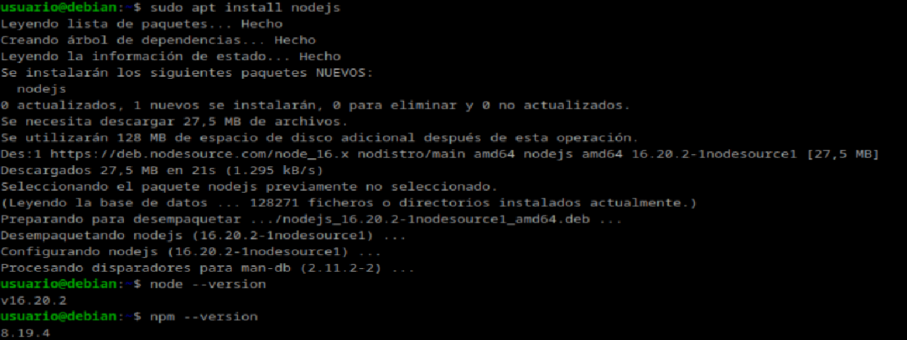
Y ahora instalamos Express.js y creamos un un proyecto de prueba:
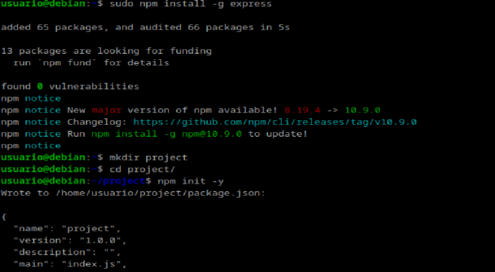
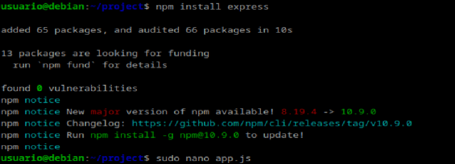
Y cambiamos localhost por nuestra ip:
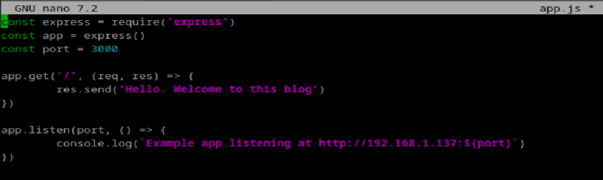
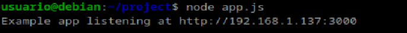
Nos dirigimos a la ip con el puerto 3000 y veremos lo siguiente:
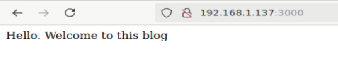
Despliegue de una nueva aplicación
Ahora desplegaremos una aplicación ya creada. Clonamos el repositorio a nuestra máquina e instalamos las librerias:
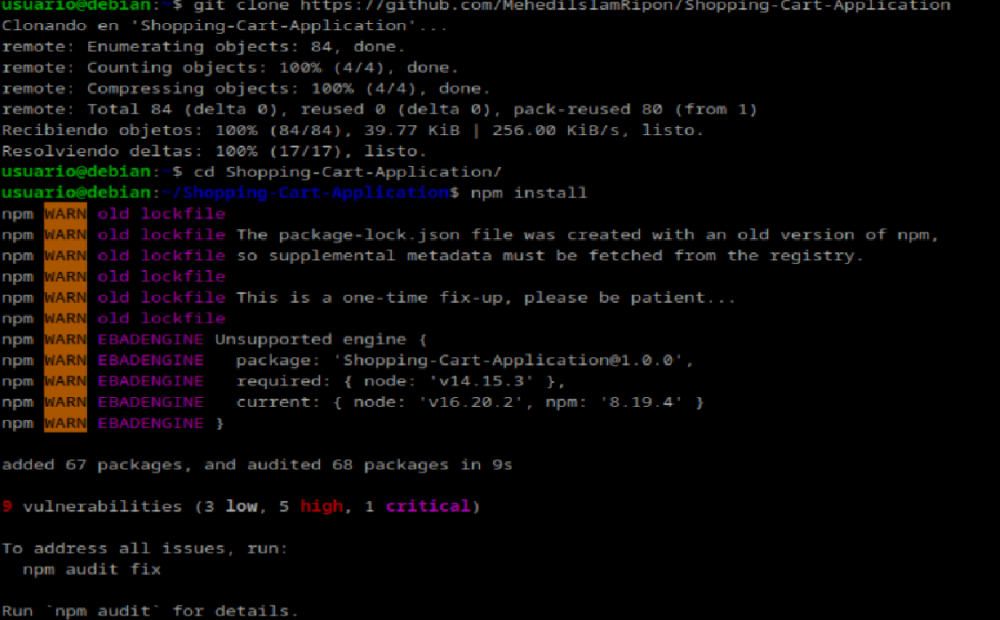
Por último iniciamos la aplicación
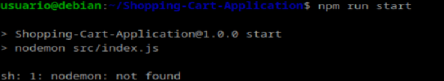
Como vemos nos ha soltado un error "sh: 1: nodemo: not found. Para solucionarlo debemos installar nodemon:
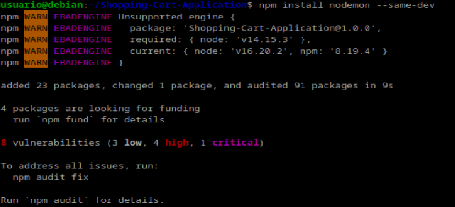
E iniciamos de nuevo:
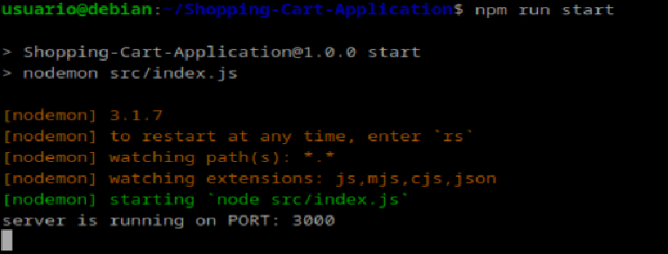
Ahora podremos visualizar lo sigueinte en nuestro navegador:
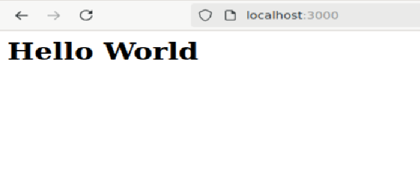
PRÁCTICA 3.4: DESPLIEGUE DE UNA APLICACIÓN REACT EN NETLIFY (PaaS)
Nos logueamos con ssh en nuestra máquina debian
Creación de nuestra aplicación
Creamos un directorio con 3 archivos: head.html, tail.html y aplicacion.js. Dentro del directorio creamos nuestra aplicación Node.js. Ejecutamos node aplicacion.js para ver que funciona correctamente:
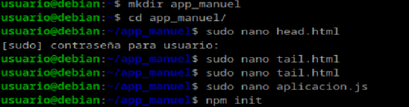
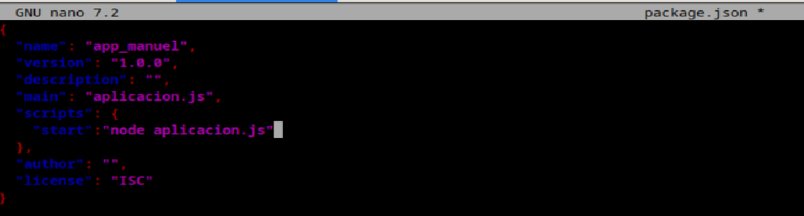
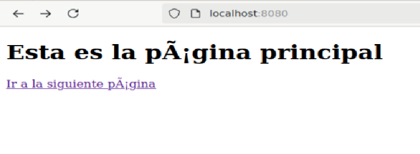
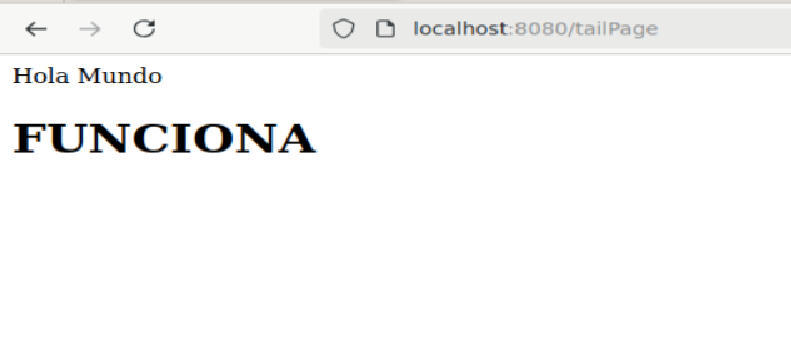
Aplicación para Netlify
En primer lugar nos clonamos una aplicación creada con React a nuestra máquina:
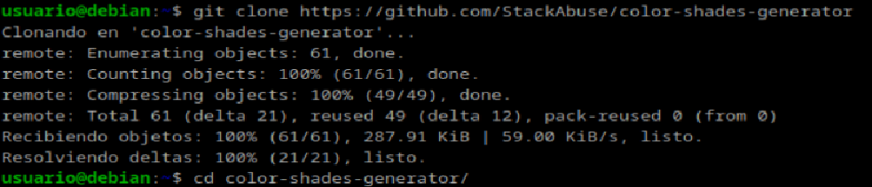
Proceso de despliegue en Netlify
Antes de nada me he creado una cuenta en Netlify sin enlazar mi github. Y a continuación instalamos el CLI de Netlify:
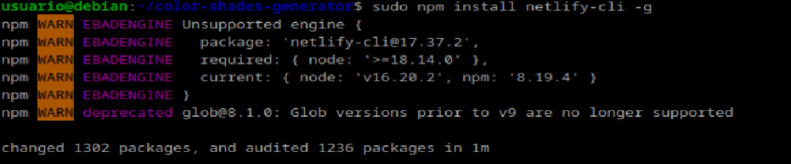
Desde la página de Netlify generamos un token que añadimos nuestra máquina:
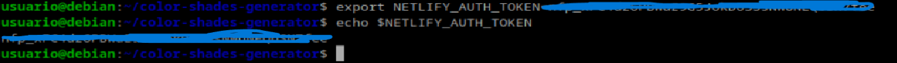
Y a continuación nos logueamos:
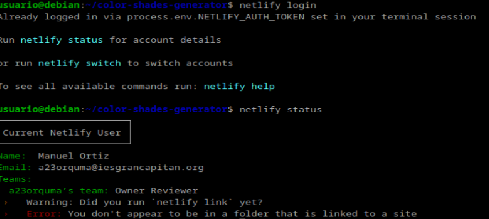
Como antes instalamos las dependencias y lo ejecutamos de la siguiente forma:
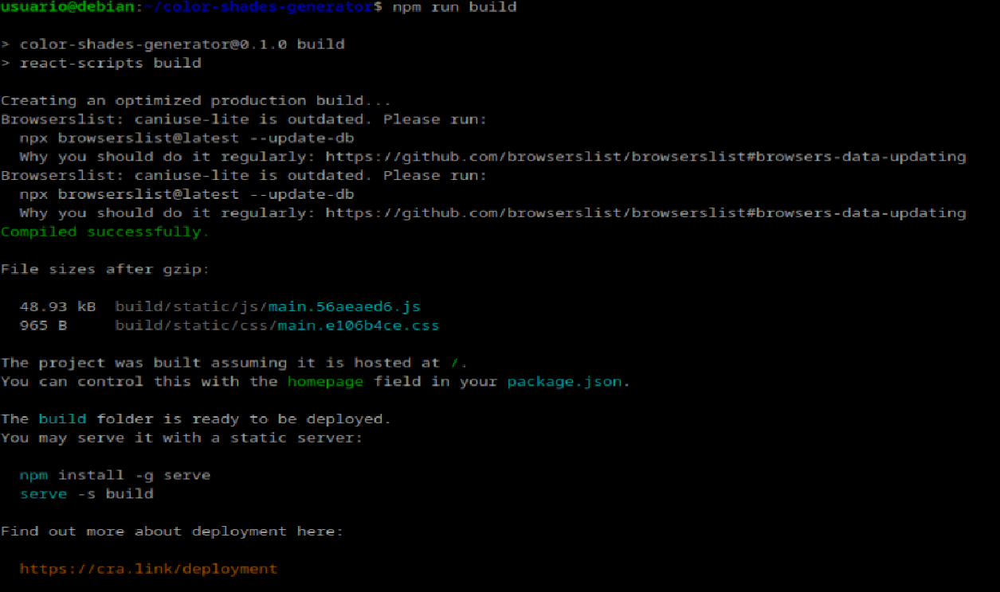
Y lo desplegamos:
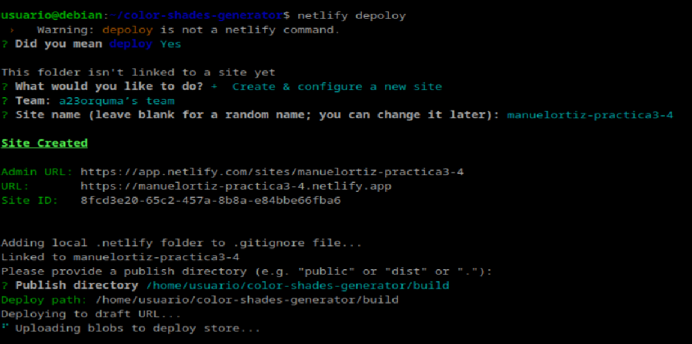
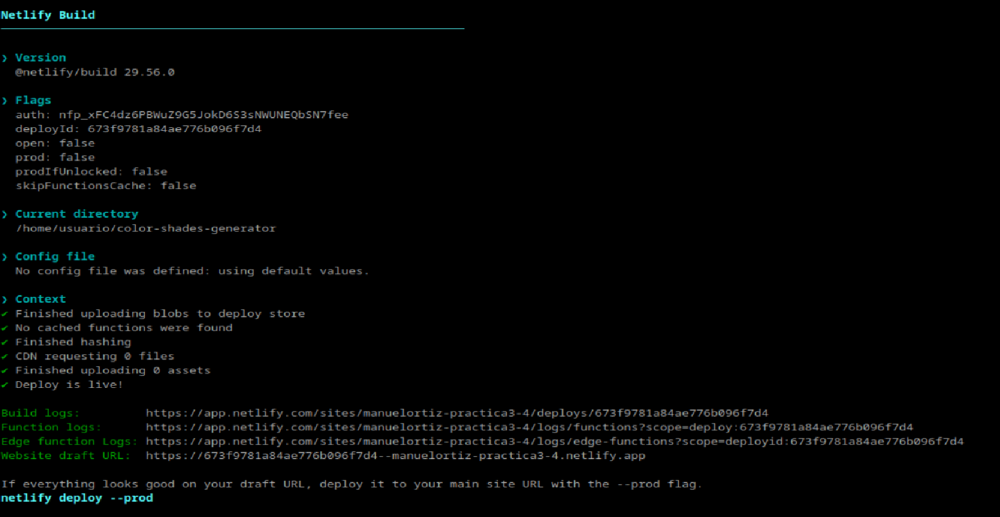
Ya desplegado, iremos al navegador e introduciremos la url que nos ha proporcionado:
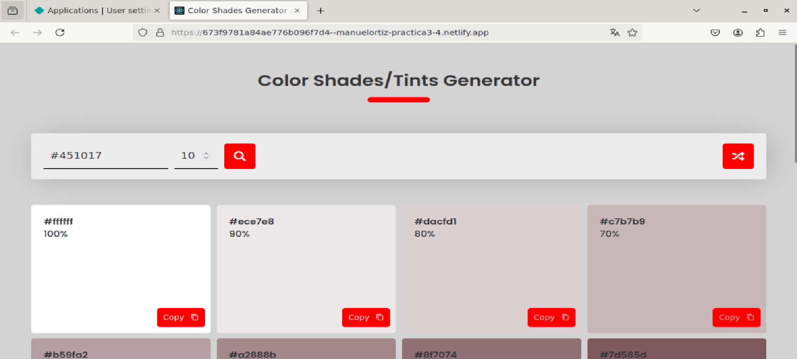
Despliegue mediante conexión con Github.
Eliminamos el proyecto anterior tanto en local como en el servicio de Netlify:
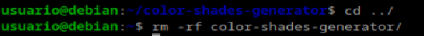
Creamos un repositorio en GitHub:
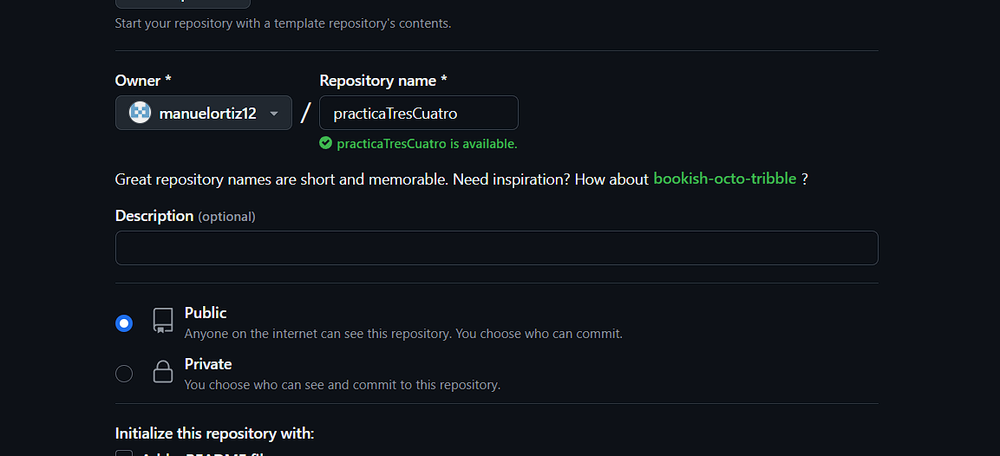
Descargamos un repositorio de GitHub:
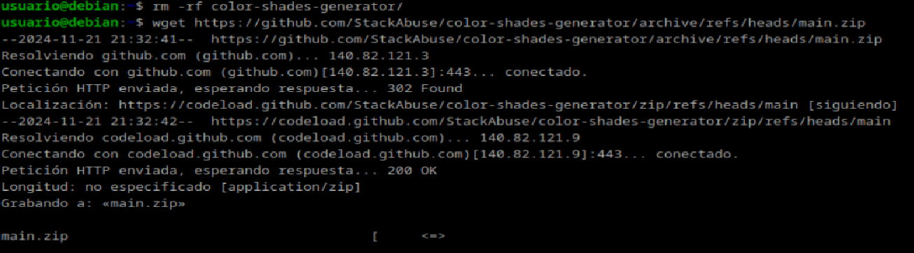
Lo descomprimimos en nuestro directorio:
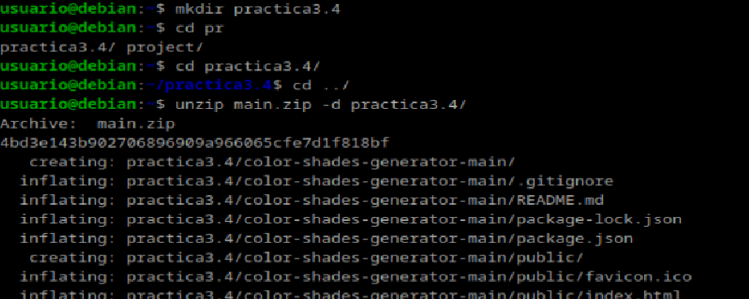
Y a continuación enlazamos el repositorio local con el que acabamos de crear en github y hacemos un push del contenido de este:
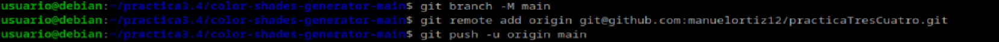
Ahora desde la página de Netlify, enlazamos nuestra cuenta de GitHub, seleccionamos nuestro repositorio y lo desplegamos:
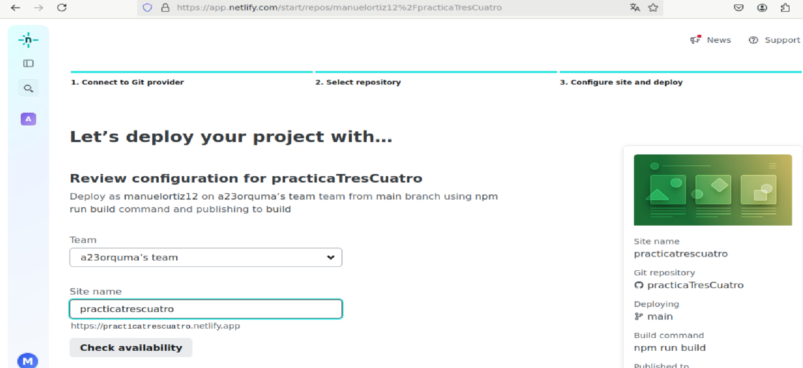
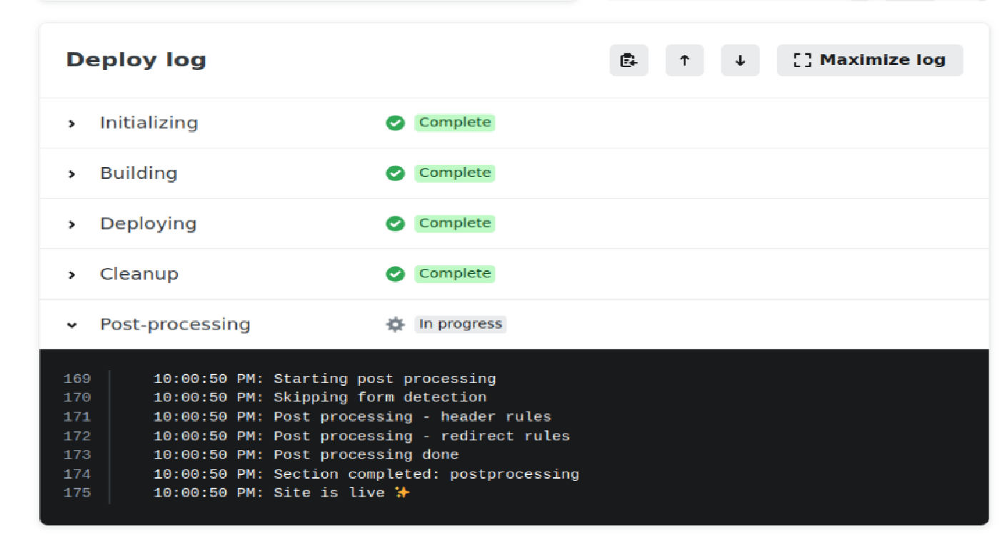
Ya desplegado, vamos a hacer un commit en nuestro repositorio de github y comprobaremos que se despliega el cambio automáticamente en Netlify. Para esto modificaremos el contenido del archivo robots.txt, donde añadiremos una carpeta con nuestro nombre:
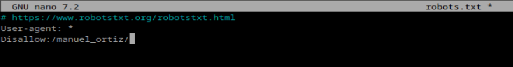
Ahora comprobamos Netlify, y veremos que se ha realizado un cambio con la fecha en la que hemos hecho el push del commit:
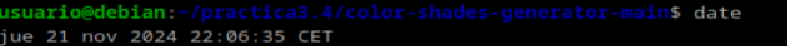
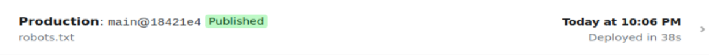
Y si nos dirigimos a la siguiente dirección comprobaremos que, efectivamente, se ha realizado el cambio:
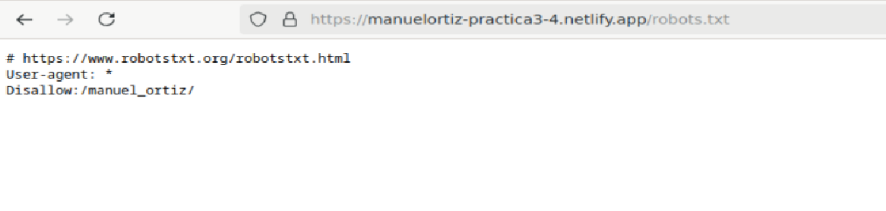